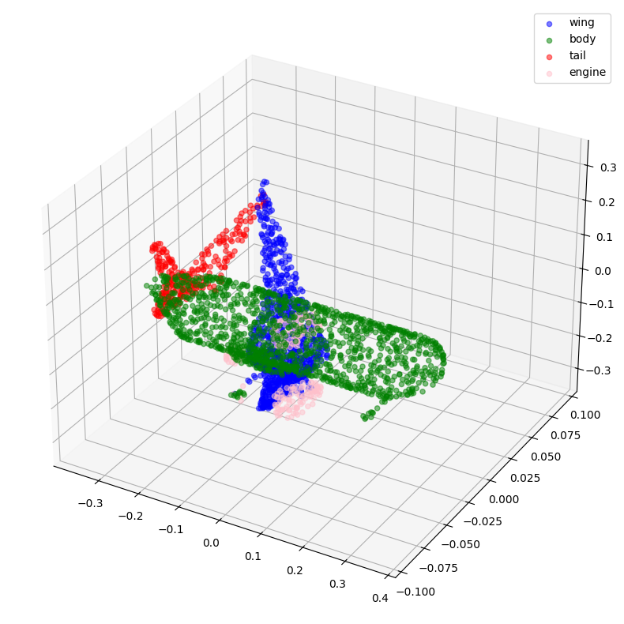
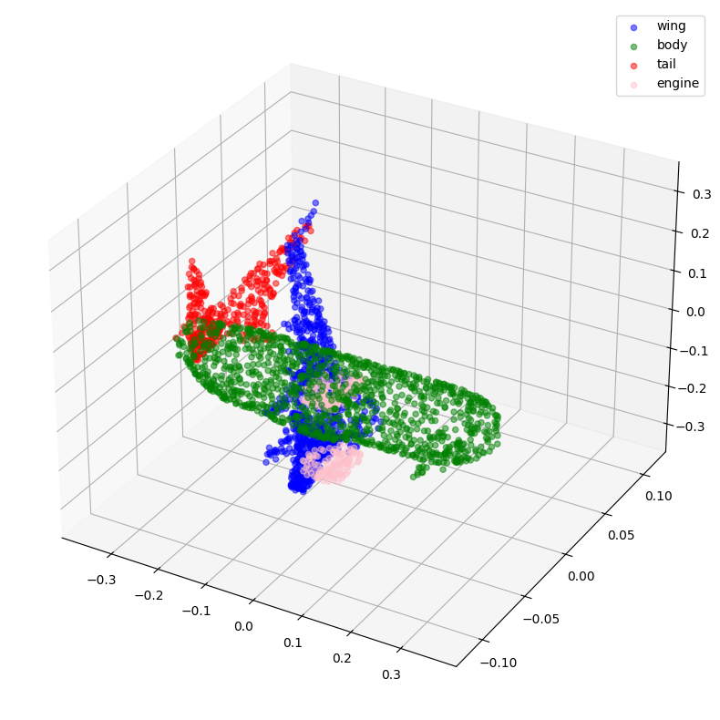
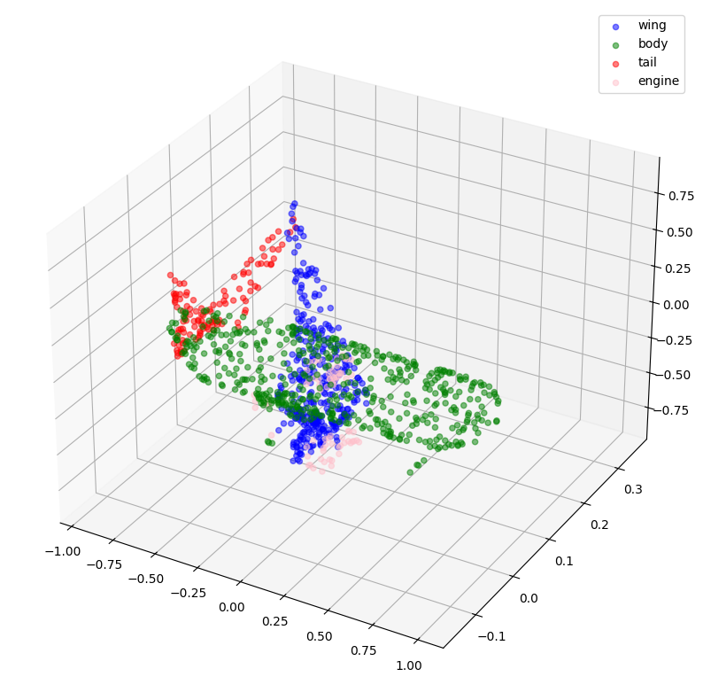
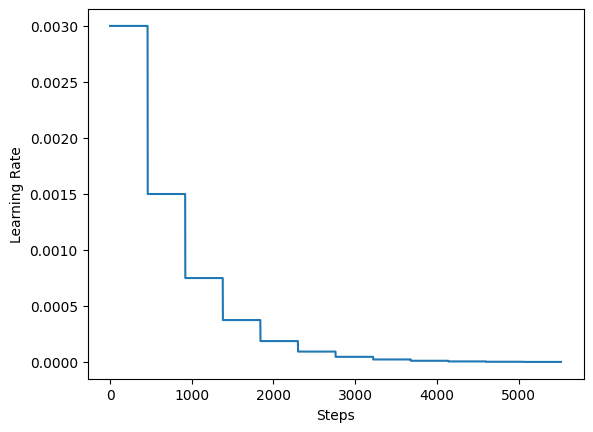
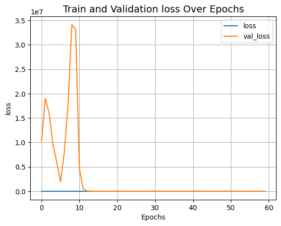
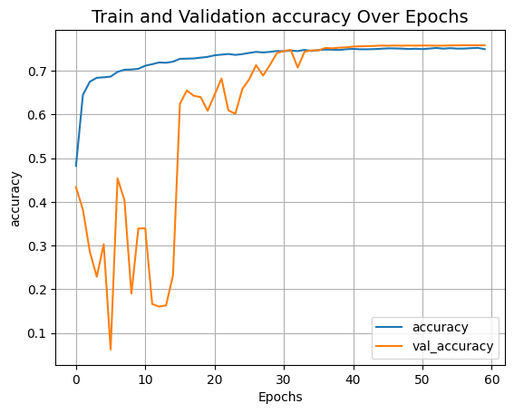
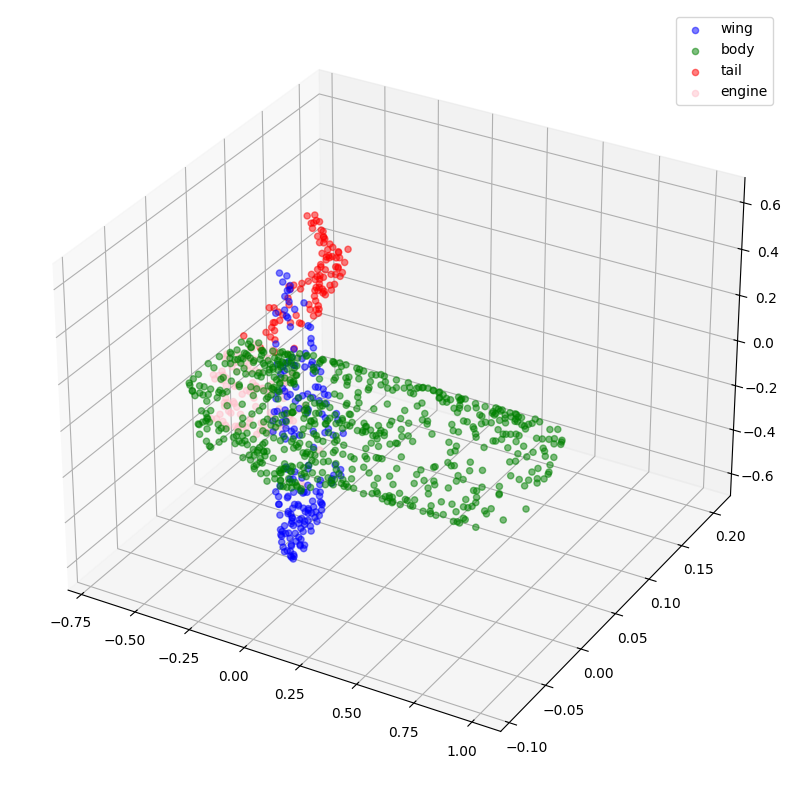
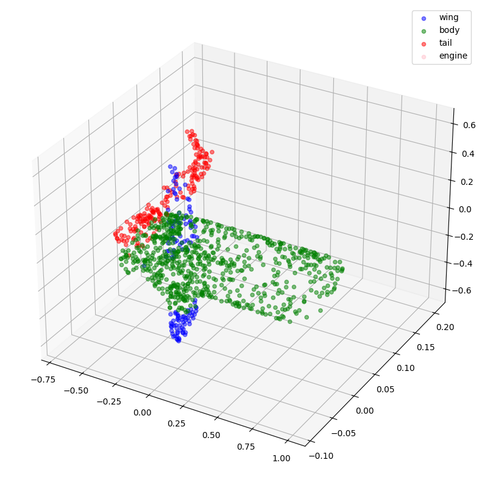

Point cloud segmentation with PointNet
Author: Soumik Rakshit, Sayak Paul
Date created: 2020/10/23
Last modified: 2020/10/24
Description: Implementation of a PointNet-based model for segmenting point clouds.

Introduction
A "point cloud" is an important type of data structure for storing geometric shape data. Due to its irregular format, it's often transformed into regular 3D voxel grids or collections of images before being used in deep learning applications, a step which makes the data unnecessarily large. The PointNet family of models solves this problem by directly consuming point clouds, respecting the permutation-invariance property of the point data. The PointNet family of models provides a simple, unified architecture for applications ranging from object classification, part segmentation, to scene semantic parsing.
In this example, we demonstrate the implementation of the PointNet architecture for shape segmentation.
References
- PointNet: Deep Learning on Point Sets for 3D Classification and Segmentation
- Point cloud classification with PointNet
- Spatial Transformer Networks
Imports
import os
import json
import random
import numpy as np
import pandas as pd
from tqdm import tqdm
from glob import glob
import tensorflow as tf # For tf.data
import keras
from keras import layers
import matplotlib.pyplot as plt
Downloading Dataset
The ShapeNet dataset is an ongoing effort to establish a richly-annotated, large-scale dataset of 3D shapes. ShapeNetCore is a subset of the full ShapeNet dataset with clean single 3D models and manually verified category and alignment annotations. It covers 55 common object categories, with about 51,300 unique 3D models.
For this example, we use one of the 12 object categories of PASCAL 3D+, included as part of the ShapenetCore dataset.
dataset_url = "https://git.io/JiY4i"
dataset_path = keras.utils.get_file(
fname="shapenet.zip",
origin=dataset_url,
cache_subdir="datasets",
hash_algorithm="auto",
extract=True,
archive_format="auto",
cache_dir="datasets",
)
Loading the dataset
We parse the dataset metadata in order to easily map model categories to their respective directories and segmentation classes to colors for the purpose of visualization.
with open("/tmp/.keras/datasets/PartAnnotation/metadata.json") as json_file:
metadata = json.load(json_file)
print(metadata)
{'Airplane': {'directory': '02691156', 'lables': ['wing', 'body', 'tail', 'engine'], 'colors': ['blue', 'green', 'red', 'pink']}, 'Bag': {'directory': '02773838', 'lables': ['handle', 'body'], 'colors': ['blue', 'green']}, 'Cap': {'directory': '02954340', 'lables': ['panels', 'peak'], 'colors': ['blue', 'green']}, 'Car': {'directory': '02958343', 'lables': ['wheel', 'hood', 'roof'], 'colors': ['blue', 'green', 'red']}, 'Chair': {'directory': '03001627', 'lables': ['leg', 'arm', 'back', 'seat'], 'colors': ['blue', 'green', 'red', 'pink']}, 'Earphone': {'directory': '03261776', 'lables': ['earphone', 'headband'], 'colors': ['blue', 'green']}, 'Guitar': {'directory': '03467517', 'lables': ['head', 'body', 'neck'], 'colors': ['blue', 'green', 'red']}, 'Knife': {'directory': '03624134', 'lables': ['handle', 'blade'], 'colors': ['blue', 'green']}, 'Lamp': {'directory': '03636649', 'lables': ['canopy', 'lampshade', 'base'], 'colors': ['blue', 'green', 'red']}, 'Laptop': {'directory': '03642806', 'lables': ['keyboard'], 'colors': ['blue']}, 'Motorbike': {'directory': '03790512', 'lables': ['wheel', 'handle', 'gas_tank', 'light', 'seat'], 'colors': ['blue', 'green', 'red', 'pink', 'yellow']}, 'Mug': {'directory': '03797390', 'lables': ['handle'], 'colors': ['blue']}, 'Pistol': {'directory': '03948459', 'lables': ['trigger_and_guard', 'handle', 'barrel'], 'colors': ['blue', 'green', 'red']}, 'Rocket': {'directory': '04099429', 'lables': ['nose', 'body', 'fin'], 'colors': ['blue', 'green', 'red']}, 'Skateboard': {'directory': '04225987', 'lables': ['wheel', 'deck'], 'colors': ['blue', 'green']}, 'Table': {'directory': '04379243', 'lables': ['leg', 'top'], 'colors': ['blue', 'green']}}
In this example, we train PointNet to segment the parts of an Airplane model.
points_dir = "/tmp/.keras/datasets/PartAnnotation/{}/points".format(
metadata["Airplane"]["directory"]
)
labels_dir = "/tmp/.keras/datasets/PartAnnotation/{}/points_label".format(
metadata["Airplane"]["directory"]
)
LABELS = metadata["Airplane"]["lables"]
COLORS = metadata["Airplane"]["colors"]
VAL_SPLIT = 0.2
NUM_SAMPLE_POINTS = 1024
BATCH_SIZE = 32
EPOCHS = 60
INITIAL_LR = 1e-3
Structuring the dataset
We generate the following in-memory data structures from the Airplane point clouds and their labels:
point_cloudsis a list ofnp.arrayobjects that represent the point cloud data in the form of x, y and z coordinates. Axis 0 represents the number of points in the point cloud, while axis 1 represents the coordinates.all_labelsis the list that represents the label of each coordinate as a string (needed mainly for visualization purposes).test_point_cloudsis in the same format aspoint_clouds, but doesn't have corresponding the labels of the point clouds.all_labelsis a list ofnp.arrayobjects that represent the point cloud labels for each coordinate, corresponding to thepoint_cloudslist.point_cloud_labelsis a list ofnp.arrayobjects that represent the point cloud labels for each coordinate in one-hot encoded form, corresponding to thepoint_cloudslist.
point_clouds, test_point_clouds = [], []
point_cloud_labels, all_labels = [], []
points_files = glob(os.path.join(points_dir, "*.pts"))
for point_file in tqdm(points_files):
point_cloud = np.loadtxt(point_file)
if point_cloud.shape[0] < NUM_SAMPLE_POINTS:
continue
# Get the file-id of the current point cloud for parsing its
# labels.
file_id = point_file.split("/")[-1].split(".")[0]
label_data, num_labels = {}, 0
for label in LABELS:
label_file = os.path.join(labels_dir, label, file_id + ".seg")
if os.path.exists(label_file):
label_data[label] = np.loadtxt(label_file).astype("float32")
num_labels = len(label_data[label])
# Point clouds having labels will be our training samples.
try:
label_map = ["none"] * num_labels
for label in LABELS:
for i, data in enumerate(label_data[label]):
label_map[i] = label if data == 1 else label_map[i]
label_data = [
LABELS.index(label) if label != "none" else len(LABELS)
for label in label_map
]
# Apply one-hot encoding to the dense label representation.
label_data = keras.utils.to_categorical(label_data, num_classes=len(LABELS) + 1)
point_clouds.append(point_cloud)
point_cloud_labels.append(label_data)
all_labels.append(label_map)
except KeyError:
test_point_clouds.append(point_cloud)
100%|██████████████████████████████████████████████████████████████████████| 4045/4045 [01:30<00:00, 44.54it/s]
Next, we take a look at some samples from the in-memory arrays we just generated:
for _ in range(5):
i = random.randint(0, len(point_clouds) - 1)
print(f"point_clouds[{i}].shape:", point_clouds[0].shape)
print(f"point_cloud_labels[{i}].shape:", point_cloud_labels[0].shape)
for j in range(5):
print(
f"all_labels[{i}][{j}]:",
all_labels[i][j],
f"\tpoint_cloud_labels[{i}][{j}]:",
point_cloud_labels[i][j],
"\n",
)
point_clouds[333].shape: (2571, 3)
point_cloud_labels[333].shape: (2571, 5)
all_labels[333][0]: tail point_cloud_labels[333][0]: [0. 0. 1. 0. 0.]
all_labels[333][1]: wing point_cloud_labels[333][1]: [1. 0. 0. 0. 0.]
all_labels[333][2]: tail point_cloud_labels[333][2]: [0. 0. 1. 0. 0.]
all_labels[333][3]: engine point_cloud_labels[333][3]: [0. 0. 0. 1. 0.]
all_labels[333][4]: wing point_cloud_labels[333][4]: [1. 0. 0. 0. 0.]
point_clouds[3273].shape: (2571, 3)
point_cloud_labels[3273].shape: (2571, 5)
all_labels[3273][0]: body point_cloud_labels[3273][0]: [0. 1. 0. 0. 0.]
all_labels[3273][1]: body point_cloud_labels[3273][1]: [0. 1. 0. 0. 0.]
all_labels[3273][2]: tail point_cloud_labels[3273][2]: [0. 0. 1. 0. 0.]
all_labels[3273][3]: wing point_cloud_labels[3273][3]: [1. 0. 0. 0. 0.]
all_labels[3273][4]: wing point_cloud_labels[3273][4]: [1. 0. 0. 0. 0.]
point_clouds[929].shape: (2571, 3)
point_cloud_labels[929].shape: (2571, 5)
all_labels[929][0]: body point_cloud_labels[929][0]: [0. 1. 0. 0. 0.]
all_labels[929][1]: tail point_cloud_labels[929][1]: [0. 0. 1. 0. 0.]
all_labels[929][2]: wing point_cloud_labels[929][2]: [1. 0. 0. 0. 0.]
all_labels[929][3]: tail point_cloud_labels[929][3]: [0. 0. 1. 0. 0.]
all_labels[929][4]: body point_cloud_labels[929][4]: [0. 1. 0. 0. 0.]
point_clouds[496].shape: (2571, 3)
point_cloud_labels[496].shape: (2571, 5)
all_labels[496][0]: body point_cloud_labels[496][0]: [0. 1. 0. 0. 0.]
all_labels[496][1]: body point_cloud_labels[496][1]: [0. 1. 0. 0. 0.]
all_labels[496][2]: body point_cloud_labels[496][2]: [0. 1. 0. 0. 0.]
all_labels[496][3]: wing point_cloud_labels[496][3]: [1. 0. 0. 0. 0.]
all_labels[496][4]: body point_cloud_labels[496][4]: [0. 1. 0. 0. 0.]
point_clouds[3508].shape: (2571, 3)
point_cloud_labels[3508].shape: (2571, 5)
all_labels[3508][0]: body point_cloud_labels[3508][0]: [0. 1. 0. 0. 0.]
all_labels[3508][1]: body point_cloud_labels[3508][1]: [0. 1. 0. 0. 0.]
all_labels[3508][2]: body point_cloud_labels[3508][2]: [0. 1. 0. 0. 0.]
all_labels[3508][3]: body point_cloud_labels[3508][3]: [0. 1. 0. 0. 0.]
all_labels[3508][4]: body point_cloud_labels[3508][4]: [0. 1. 0. 0. 0.]
Now, let's visualize some of the point clouds along with their labels.
def visualize_data(point_cloud, labels):
df = pd.DataFrame(
data={
"x": point_cloud[:, 0],
"y": point_cloud[:, 1],
"z": point_cloud[:, 2],
"label": labels,
}
)
fig = plt.figure(figsize=(15, 10))
ax = plt.axes(projection="3d")
for index, label in enumerate(LABELS):
c_df = df[df["label"] == label]
try:
ax.scatter(
c_df["x"], c_df["y"], c_df["z"], label=label, alpha=0.5, c=COLORS[index]
)
except IndexError:
pass
ax.legend()
plt.show()
visualize_data(point_clouds[0], all_labels[0])
visualize_data(point_clouds[300], all_labels[300])


Preprocessing
Note that all the point clouds that we have loaded consist of a variable number of points, which makes it difficult for us to batch them together. In order to overcome this problem, we randomly sample a fixed number of points from each point cloud. We also normalize the point clouds in order to make the data scale-invariant.
for index in tqdm(range(len(point_clouds))):
current_point_cloud = point_clouds[index]
current_label_cloud = point_cloud_labels[index]
current_labels = all_labels[index]
num_points = len(current_point_cloud)
# Randomly sampling respective indices.
sampled_indices = random.sample(list(range(num_points)), NUM_SAMPLE_POINTS)
# Sampling points corresponding to sampled indices.
sampled_point_cloud = np.array([current_point_cloud[i] for i in sampled_indices])
# Sampling corresponding one-hot encoded labels.
sampled_label_cloud = np.array([current_label_cloud[i] for i in sampled_indices])
# Sampling corresponding labels for visualization.
sampled_labels = np.array([current_labels[i] for i in sampled_indices])
# Normalizing sampled point cloud.
norm_point_cloud = sampled_point_cloud - np.mean(sampled_point_cloud, axis=0)
norm_point_cloud /= np.max(np.linalg.norm(norm_point_cloud, axis=1))
point_clouds[index] = norm_point_cloud
point_cloud_labels[index] = sampled_label_cloud
all_labels[index] = sampled_labels
100%|█████████████████████████████████████████████████████████████████████| 3694/3694 [00:08<00:00, 446.45it/s]
Let's visualize the sampled and normalized point clouds along with their corresponding labels.
visualize_data(point_clouds[0], all_labels[0])
visualize_data(point_clouds[300], all_labels[300])

Creating TensorFlow datasets
We create tf.data.Dataset objects for the training and validation data.
We also augment the training point clouds by applying random jitter to them.
def load_data(point_cloud_batch, label_cloud_batch):
point_cloud_batch.set_shape([NUM_SAMPLE_POINTS, 3])
label_cloud_batch.set_shape([NUM_SAMPLE_POINTS, len(LABELS) + 1])
return point_cloud_batch, label_cloud_batch
def augment(point_cloud_batch, label_cloud_batch):
noise = tf.random.uniform(
tf.shape(label_cloud_batch), -0.001, 0.001, dtype=tf.float64
)
point_cloud_batch += noise[:, :, :3]
return point_cloud_batch, label_cloud_batch
def generate_dataset(point_clouds, label_clouds, is_training=True):
dataset = tf.data.Dataset.from_tensor_slices((point_clouds, label_clouds))
dataset = dataset.shuffle(BATCH_SIZE * 100) if is_training else dataset
dataset = dataset.map(load_data, num_parallel_calls=tf.data.AUTOTUNE)
dataset = dataset.batch(batch_size=BATCH_SIZE)
dataset = (
dataset.map(augment, num_parallel_calls=tf.data.AUTOTUNE)
if is_training
else dataset
)
return dataset
split_index = int(len(point_clouds) * (1 - VAL_SPLIT))
train_point_clouds = point_clouds[:split_index]
train_label_cloud = point_cloud_labels[:split_index]
total_training_examples = len(train_point_clouds)
val_point_clouds = point_clouds[split_index:]
val_label_cloud = point_cloud_labels[split_index:]
print("Num train point clouds:", len(train_point_clouds))
print("Num train point cloud labels:", len(train_label_cloud))
print("Num val point clouds:", len(val_point_clouds))
print("Num val point cloud labels:", len(val_label_cloud))
train_dataset = generate_dataset(train_point_clouds, train_label_cloud)
val_dataset = generate_dataset(val_point_clouds, val_label_cloud, is_training=False)
print("Train Dataset:", train_dataset)
print("Validation Dataset:", val_dataset)
Num train point clouds: 2955
Num train point cloud labels: 2955
Num val point clouds: 739
Num val point cloud labels: 739
Train Dataset: <_ParallelMapDataset element_spec=(TensorSpec(shape=(None, 1024, 3), dtype=tf.float64, name=None), TensorSpec(shape=(None, 1024, 5), dtype=tf.float64, name=None))>
Validation Dataset: <_BatchDataset element_spec=(TensorSpec(shape=(None, 1024, 3), dtype=tf.float64, name=None), TensorSpec(shape=(None, 1024, 5), dtype=tf.float64, name=None))>
PointNet model
The figure below depicts the internals of the PointNet model family:

Given that PointNet is meant to consume an unordered set of coordinates as its input data, its architecture needs to match the following characteristic properties of point cloud data:
Permutation invariance
Given the unstructured nature of point cloud data, a scan made up of n points has n!
permutations. The subsequent data processing must be invariant to the different
representations. In order to make PointNet invariant to input permutations, we use a
symmetric function (such as max-pooling) once the n input points are mapped to
higher-dimensional space. The result is a global feature vector that aims to capture
an aggregate signature of the n input points. The global feature vector is used alongside
local point features for segmentation.

Transformation invariance
Segmentation outputs should be unchanged if the object undergoes certain transformations,
such as translation or scaling. For a given input point cloud, we apply an appropriate
rigid or affine transformation to achieve pose normalization. Because each of the n input
points are represented as a vector and are mapped to the embedding spaces independently,
applying a geometric transformation simply amounts to matrix multiplying each point with
a transformation matrix. This is motivated by the concept of
Spatial Transformer Networks.
The operations comprising the T-Net are motivated by the higher-level architecture of PointNet. MLPs (or fully-connected layers) are used to map the input points independently and identically to a higher-dimensional space; max-pooling is used to encode a global feature vector whose dimensionality is then reduced with fully-connected layers. The input-dependent features at the final fully-connected layer are then combined with globally trainable weights and biases, resulting in a 3-by-3 transformation matrix.

Point interactions
The interaction between neighboring points often carries useful information (i.e., a single point should not be treated in isolation). Whereas classification need only make use of global features, segmentation must be able to leverage local point features along with global point features.
Note: The figures presented in this section have been taken from the original paper.
Now that we know the pieces that compose the PointNet model, we can implement the model. We start by implementing the basic blocks i.e., the convolutional block and the multi-layer perceptron block.
def conv_block(x, filters, name):
x = layers.Conv1D(filters, kernel_size=1, padding="valid", name=f"{name}_conv")(x)
x = layers.BatchNormalization(name=f"{name}_batch_norm")(x)
return layers.Activation("relu", name=f"{name}_relu")(x)
def mlp_block(x, filters, name):
x = layers.Dense(filters, name=f"{name}_dense")(x)
x = layers.BatchNormalization(name=f"{name}_batch_norm")(x)
return layers.Activation("relu", name=f"{name}_relu")(x)
We implement a regularizer (taken from this example) to enforce orthogonality in the feature space. This is needed to ensure that the magnitudes of the transformed features do not vary too much.
class OrthogonalRegularizer(keras.regularizers.Regularizer):
"""Reference: https://keras.io/examples/vision/pointnet/#build-a-model"""
def __init__(self, num_features, l2reg=0.001):
self.num_features = num_features
self.l2reg = l2reg
self.identity = keras.ops.eye(num_features)
def __call__(self, x):
x = keras.ops.reshape(x, (-1, self.num_features, self.num_features))
xxt = keras.ops.tensordot(x, x, axes=(2, 2))
xxt = keras.ops.reshape(xxt, (-1, self.num_features, self.num_features))
return keras.ops.sum(self.l2reg * keras.ops.square(xxt - self.identity))
def get_config(self):
config = super().get_config()
config.update({"num_features": self.num_features, "l2reg_strength": self.l2reg})
return config
The next piece is the transformation network which we explained earlier.
def transformation_net(inputs, num_features, name):
"""
Reference: https://keras.io/examples/vision/pointnet/#build-a-model.
The `filters` values come from the original paper:
https://arxiv.org/abs/1612.00593.
"""
x = conv_block(inputs, filters=64, name=f"{name}_1")
x = conv_block(x, filters=128, name=f"{name}_2")
x = conv_block(x, filters=1024, name=f"{name}_3")
x = layers.GlobalMaxPooling1D()(x)
x = mlp_block(x, filters=512, name=f"{name}_1_1")
x = mlp_block(x, filters=256, name=f"{name}_2_1")
return layers.Dense(
num_features * num_features,
kernel_initializer="zeros",
bias_initializer=keras.initializers.Constant(np.eye(num_features).flatten()),
activity_regularizer=OrthogonalRegularizer(num_features),
name=f"{name}_final",
)(x)
def transformation_block(inputs, num_features, name):
transformed_features = transformation_net(inputs, num_features, name=name)
transformed_features = layers.Reshape((num_features, num_features))(
transformed_features
)
return layers.Dot(axes=(2, 1), name=f"{name}_mm")([inputs, transformed_features])
Finally, we piece the above blocks together and implement the segmentation model.
def get_shape_segmentation_model(num_points, num_classes):
input_points = keras.Input(shape=(None, 3))
# PointNet Classification Network.
transformed_inputs = transformation_block(
input_points, num_features=3, name="input_transformation_block"
)
features_64 = conv_block(transformed_inputs, filters=64, name="features_64")
features_128_1 = conv_block(features_64, filters=128, name="features_128_1")
features_128_2 = conv_block(features_128_1, filters=128, name="features_128_2")
transformed_features = transformation_block(
features_128_2, num_features=128, name="transformed_features"
)
features_512 = conv_block(transformed_features, filters=512, name="features_512")
features_2048 = conv_block(features_512, filters=2048, name="pre_maxpool_block")
global_features = layers.MaxPool1D(pool_size=num_points, name="global_features")(
features_2048
)
global_features = keras.ops.tile(global_features, [1, num_points, 1])
# Segmentation head.
segmentation_input = layers.Concatenate(name="segmentation_input")(
[
features_64,
features_128_1,
features_128_2,
transformed_features,
features_512,
global_features,
]
)
segmentation_features = conv_block(
segmentation_input, filters=128, name="segmentation_features"
)
outputs = layers.Conv1D(
num_classes, kernel_size=1, activation="softmax", name="segmentation_head"
)(segmentation_features)
return keras.Model(input_points, outputs)
Instantiate the model
x, y = next(iter(train_dataset))
num_points = x.shape[1]
num_classes = y.shape[-1]
segmentation_model = get_shape_segmentation_model(num_points, num_classes)
segmentation_model.summary()
Model: "functional_1"
┏━━━━━━━━━━━━━━━━━━━━━┳━━━━━━━━━━━━━━━━━━━┳━━━━━━━━━┳━━━━━━━━━━━━━━━━━━━━━━┓ ┃ Layer (type) ┃ Output Shape ┃ Param # ┃ Connected to ┃ ┡━━━━━━━━━━━━━━━━━━━━━╇━━━━━━━━━━━━━━━━━━━╇━━━━━━━━━╇━━━━━━━━━━━━━━━━━━━━━━┩ │ input_layer │ (None, None, 3) │ 0 │ - │ │ (InputLayer) │ │ │ │ ├─────────────────────┼───────────────────┼─────────┼──────────────────────┤ │ input_transformati… │ (None, None, 64) │ 256 │ input_layer[0][0] │ │ (Conv1D) │ │ │ │ ├─────────────────────┼───────────────────┼─────────┼──────────────────────┤ │ input_transformati… │ (None, None, 64) │ 256 │ input_transformatio… │ │ (BatchNormalizatio… │ │ │ │ ├─────────────────────┼───────────────────┼─────────┼──────────────────────┤ │ input_transformati… │ (None, None, 64) │ 0 │ input_transformatio… │ │ (Activation) │ │ │ │ ├─────────────────────┼───────────────────┼─────────┼──────────────────────┤ │ input_transformati… │ (None, None, 128) │ 8,320 │ input_transformatio… │ │ (Conv1D) │ │ │ │ ├─────────────────────┼───────────────────┼─────────┼──────────────────────┤ │ input_transformati… │ (None, None, 128) │ 512 │ input_transformatio… │ │ (BatchNormalizatio… │ │ │ │ ├─────────────────────┼───────────────────┼─────────┼──────────────────────┤ │ input_transformati… │ (None, None, 128) │ 0 │ input_transformatio… │ │ (Activation) │ │ │ │ ├─────────────────────┼───────────────────┼─────────┼──────────────────────┤ │ input_transformati… │ (None, None, │ 132,096 │ input_transformatio… │ │ (Conv1D) │ 1024) │ │ │ ├─────────────────────┼───────────────────┼─────────┼──────────────────────┤ │ input_transformati… │ (None, None, │ 4,096 │ input_transformatio… │ │ (BatchNormalizatio… │ 1024) │ │ │ ├─────────────────────┼───────────────────┼─────────┼──────────────────────┤ │ input_transformati… │ (None, None, │ 0 │ input_transformatio… │ │ (Activation) │ 1024) │ │ │ ├─────────────────────┼───────────────────┼─────────┼──────────────────────┤ │ global_max_pooling… │ (None, 1024) │ 0 │ input_transformatio… │ │ (GlobalMaxPooling1… │ │ │ │ ├─────────────────────┼───────────────────┼─────────┼──────────────────────┤ │ input_transformati… │ (None, 512) │ 524,800 │ global_max_pooling1… │ │ (Dense) │ │ │ │ ├─────────────────────┼───────────────────┼─────────┼──────────────────────┤ │ input_transformati… │ (None, 512) │ 2,048 │ input_transformatio… │ │ (BatchNormalizatio… │ │ │ │ ├─────────────────────┼───────────────────┼─────────┼──────────────────────┤ │ input_transformati… │ (None, 512) │ 0 │ input_transformatio… │ │ (Activation) │ │ │ │ ├─────────────────────┼───────────────────┼─────────┼──────────────────────┤ │ input_transformati… │ (None, 256) │ 131,328 │ input_transformatio… │ │ (Dense) │ │ │ │ ├─────────────────────┼───────────────────┼─────────┼──────────────────────┤ │ input_transformati… │ (None, 256) │ 1,024 │ input_transformatio… │ │ (BatchNormalizatio… │ │ │ │ ├─────────────────────┼───────────────────┼─────────┼──────────────────────┤ │ input_transformati… │ (None, 256) │ 0 │ input_transformatio… │ │ (Activation) │ │ │ │ ├─────────────────────┼───────────────────┼─────────┼──────────────────────┤ │ input_transformati… │ (None, 9) │ 2,313 │ input_transformatio… │ │ (Dense) │ │ │ │ ├─────────────────────┼───────────────────┼─────────┼──────────────────────┤ │ reshape (Reshape) │ (None, 3, 3) │ 0 │ input_transformatio… │ ├─────────────────────┼───────────────────┼─────────┼──────────────────────┤ │ input_transformati… │ (None, None, 3) │ 0 │ input_layer[0][0], │ │ (Dot) │ │ │ reshape[0][0] │ ├─────────────────────┼───────────────────┼─────────┼──────────────────────┤ │ features_64_conv │ (None, None, 64) │ 256 │ input_transformatio… │ │ (Conv1D) │ │ │ │ ├─────────────────────┼───────────────────┼─────────┼──────────────────────┤ │ features_64_batch_… │ (None, None, 64) │ 256 │ features_64_conv[0]… │ │ (BatchNormalizatio… │ │ │ │ ├─────────────────────┼───────────────────┼─────────┼──────────────────────┤ │ features_64_relu │ (None, None, 64) │ 0 │ features_64_batch_n… │ │ (Activation) │ │ │ │ ├─────────────────────┼───────────────────┼─────────┼──────────────────────┤ │ features_128_1_conv │ (None, None, 128) │ 8,320 │ features_64_relu[0]… │ │ (Conv1D) │ │ │ │ ├─────────────────────┼───────────────────┼─────────┼──────────────────────┤ │ features_128_1_bat… │ (None, None, 128) │ 512 │ features_128_1_conv… │ │ (BatchNormalizatio… │ │ │ │ ├─────────────────────┼───────────────────┼─────────┼──────────────────────┤ │ features_128_1_relu │ (None, None, 128) │ 0 │ features_128_1_batc… │ │ (Activation) │ │ │ │ ├─────────────────────┼───────────────────┼─────────┼──────────────────────┤ │ features_128_2_conv │ (None, None, 128) │ 16,512 │ features_128_1_relu… │ │ (Conv1D) │ │ │ │ ├─────────────────────┼───────────────────┼─────────┼──────────────────────┤ │ features_128_2_bat… │ (None, None, 128) │ 512 │ features_128_2_conv… │ │ (BatchNormalizatio… │ │ │ │ ├─────────────────────┼───────────────────┼─────────┼──────────────────────┤ │ features_128_2_relu │ (None, None, 128) │ 0 │ features_128_2_batc… │ │ (Activation) │ │ │ │ ├─────────────────────┼───────────────────┼─────────┼──────────────────────┤ │ transformed_featur… │ (None, None, 64) │ 8,256 │ features_128_2_relu… │ │ (Conv1D) │ │ │ │ ├─────────────────────┼───────────────────┼─────────┼──────────────────────┤ │ transformed_featur… │ (None, None, 64) │ 256 │ transformed_feature… │ │ (BatchNormalizatio… │ │ │ │ ├─────────────────────┼───────────────────┼─────────┼──────────────────────┤ │ transformed_featur… │ (None, None, 64) │ 0 │ transformed_feature… │ │ (Activation) │ │ │ │ ├─────────────────────┼───────────────────┼─────────┼──────────────────────┤ │ transformed_featur… │ (None, None, 128) │ 8,320 │ transformed_feature… │ │ (Conv1D) │ │ │ │ ├─────────────────────┼───────────────────┼─────────┼──────────────────────┤ │ transformed_featur… │ (None, None, 128) │ 512 │ transformed_feature… │ │ (BatchNormalizatio… │ │ │ │ ├─────────────────────┼───────────────────┼─────────┼──────────────────────┤ │ transformed_featur… │ (None, None, 128) │ 0 │ transformed_feature… │ │ (Activation) │ │ │ │ ├─────────────────────┼───────────────────┼─────────┼──────────────────────┤ │ transformed_featur… │ (None, None, │ 132,096 │ transformed_feature… │ │ (Conv1D) │ 1024) │ │ │ ├─────────────────────┼───────────────────┼─────────┼──────────────────────┤ │ transformed_featur… │ (None, None, │ 4,096 │ transformed_feature… │ │ (BatchNormalizatio… │ 1024) │ │ │ ├─────────────────────┼───────────────────┼─────────┼──────────────────────┤ │ transformed_featur… │ (None, None, │ 0 │ transformed_feature… │ │ (Activation) │ 1024) │ │ │ ├─────────────────────┼───────────────────┼─────────┼──────────────────────┤ │ global_max_pooling… │ (None, 1024) │ 0 │ transformed_feature… │ │ (GlobalMaxPooling1… │ │ │ │ ├─────────────────────┼───────────────────┼─────────┼──────────────────────┤ │ transformed_featur… │ (None, 512) │ 524,800 │ global_max_pooling1… │ │ (Dense) │ │ │ │ ├─────────────────────┼───────────────────┼─────────┼──────────────────────┤ │ transformed_featur… │ (None, 512) │ 2,048 │ transformed_feature… │ │ (BatchNormalizatio… │ │ │ │ ├─────────────────────┼───────────────────┼─────────┼──────────────────────┤ │ transformed_featur… │ (None, 512) │ 0 │ transformed_feature… │ │ (Activation) │ │ │ │ ├─────────────────────┼───────────────────┼─────────┼──────────────────────┤ │ transformed_featur… │ (None, 256) │ 131,328 │ transformed_feature… │ │ (Dense) │ │ │ │ ├─────────────────────┼───────────────────┼─────────┼──────────────────────┤ │ transformed_featur… │ (None, 256) │ 1,024 │ transformed_feature… │ │ (BatchNormalizatio… │ │ │ │ ├─────────────────────┼───────────────────┼─────────┼──────────────────────┤ │ transformed_featur… │ (None, 256) │ 0 │ transformed_feature… │ │ (Activation) │ │ │ │ ├─────────────────────┼───────────────────┼─────────┼──────────────────────┤ │ transformed_featur… │ (None, 16384) │ 4,210,… │ transformed_feature… │ │ (Dense) │ │ │ │ ├─────────────────────┼───────────────────┼─────────┼──────────────────────┤ │ reshape_1 (Reshape) │ (None, 128, 128) │ 0 │ transformed_feature… │ ├─────────────────────┼───────────────────┼─────────┼──────────────────────┤ │ transformed_featur… │ (None, None, 128) │ 0 │ features_128_2_relu… │ │ (Dot) │ │ │ reshape_1[0][0] │ ├─────────────────────┼───────────────────┼─────────┼──────────────────────┤ │ features_512_conv │ (None, None, 512) │ 66,048 │ transformed_feature… │ │ (Conv1D) │ │ │ │ ├─────────────────────┼───────────────────┼─────────┼──────────────────────┤ │ features_512_batch… │ (None, None, 512) │ 2,048 │ features_512_conv[0… │ │ (BatchNormalizatio… │ │ │ │ ├─────────────────────┼───────────────────┼─────────┼──────────────────────┤ │ features_512_relu │ (None, None, 512) │ 0 │ features_512_batch_… │ │ (Activation) │ │ │ │ ├─────────────────────┼───────────────────┼─────────┼──────────────────────┤ │ pre_maxpool_block_… │ (None, None, │ 1,050,… │ features_512_relu[0… │ │ (Conv1D) │ 2048) │ │ │ ├─────────────────────┼───────────────────┼─────────┼──────────────────────┤ │ pre_maxpool_block_… │ (None, None, │ 8,192 │ pre_maxpool_block_c… │ │ (BatchNormalizatio… │ 2048) │ │ │ ├─────────────────────┼───────────────────┼─────────┼──────────────────────┤ │ pre_maxpool_block_… │ (None, None, │ 0 │ pre_maxpool_block_b… │ │ (Activation) │ 2048) │ │ │ ├─────────────────────┼───────────────────┼─────────┼──────────────────────┤ │ global_features │ (None, None, │ 0 │ pre_maxpool_block_r… │ │ (MaxPooling1D) │ 2048) │ │ │ ├─────────────────────┼───────────────────┼─────────┼──────────────────────┤ │ tile (Tile) │ (None, None, │ 0 │ global_features[0][… │ │ │ 2048) │ │ │ ├─────────────────────┼───────────────────┼─────────┼──────────────────────┤ │ segmentation_input │ (None, None, │ 0 │ features_64_relu[0]… │ │ (Concatenate) │ 3008) │ │ features_128_1_relu… │ │ │ │ │ features_128_2_relu… │ │ │ │ │ transformed_feature… │ │ │ │ │ features_512_relu[0… │ │ │ │ │ tile[0][0] │ ├─────────────────────┼───────────────────┼─────────┼──────────────────────┤ │ segmentation_featu… │ (None, None, 128) │ 385,152 │ segmentation_input[… │ │ (Conv1D) │ │ │ │ ├─────────────────────┼───────────────────┼─────────┼──────────────────────┤ │ segmentation_featu… │ (None, None, 128) │ 512 │ segmentation_featur… │ │ (BatchNormalizatio… │ │ │ │ ├─────────────────────┼───────────────────┼─────────┼──────────────────────┤ │ segmentation_featu… │ (None, None, 128) │ 0 │ segmentation_featur… │ │ (Activation) │ │ │ │ ├─────────────────────┼───────────────────┼─────────┼──────────────────────┤ │ segmentation_head │ (None, None, 5) │ 645 │ segmentation_featur… │ │ (Conv1D) │ │ │ │ └─────────────────────┴───────────────────┴─────────┴──────────────────────┘
Total params: 7,370,062 (28.11 MB)
Trainable params: 7,356,110 (28.06 MB)
Non-trainable params: 13,952 (54.50 KB)
Training
For the training the authors recommend using a learning rate schedule that decays the initial learning rate by half every 20 epochs. In this example, we use 5 epochs.
steps_per_epoch = total_training_examples // BATCH_SIZE
total_training_steps = steps_per_epoch * EPOCHS
print(f"Steps per epoch: {steps_per_epoch}.")
print(f"Total training steps: {total_training_steps}.")
lr_schedule = keras.optimizers.schedules.ExponentialDecay(
initial_learning_rate=0.003,
decay_steps=steps_per_epoch * 5,
decay_rate=0.5,
staircase=True,
)
steps = range(total_training_steps)
lrs = [lr_schedule(step) for step in steps]
plt.plot(lrs)
plt.xlabel("Steps")
plt.ylabel("Learning Rate")
plt.show()
Steps per epoch: 92.
Total training steps: 5520.

Finally, we implement a utility for running our experiments and launch model training.
def run_experiment(epochs):
segmentation_model = get_shape_segmentation_model(num_points, num_classes)
segmentation_model.compile(
optimizer=keras.optimizers.Adam(learning_rate=lr_schedule),
loss=keras.losses.CategoricalCrossentropy(),
metrics=["accuracy"],
)
checkpoint_filepath = "checkpoint.weights.h5"
checkpoint_callback = keras.callbacks.ModelCheckpoint(
checkpoint_filepath,
monitor="val_loss",
save_best_only=True,
save_weights_only=True,
)
history = segmentation_model.fit(
train_dataset,
validation_data=val_dataset,
epochs=epochs,
callbacks=[checkpoint_callback],
)
segmentation_model.load_weights(checkpoint_filepath)
return segmentation_model, history
segmentation_model, history = run_experiment(epochs=EPOCHS)
Epoch 1/60
2/93 [37m━━━━━━━━━━━━━━━━━━━━ 7s 86ms/step - accuracy: 0.1427 - loss: 48748.8203
WARNING: All log messages before absl::InitializeLog() is called are written to STDERR
I0000 00:00:1699916678.434176 90326 device_compiler.h:187] Compiled cluster using XLA! This line is logged at most once for the lifetime of the process.
93/93 ━━━━━━━━━━━━━━━━━━━━ 53s 259ms/step - accuracy: 0.3739 - loss: 27980.7305 - val_accuracy: 0.4340 - val_loss: 10361231.0000
Epoch 2/60
93/93 ━━━━━━━━━━━━━━━━━━━━ 48s 82ms/step - accuracy: 0.6355 - loss: 339.9151 - val_accuracy: 0.3820 - val_loss: 19069320.0000
Epoch 3/60
93/93 ━━━━━━━━━━━━━━━━━━━━ 8s 82ms/step - accuracy: 0.6695 - loss: 281.5728 - val_accuracy: 0.2859 - val_loss: 15993839.0000
Epoch 4/60
93/93 ━━━━━━━━━━━━━━━━━━━━ 8s 89ms/step - accuracy: 0.6812 - loss: 253.0939 - val_accuracy: 0.2287 - val_loss: 9633191.0000
Epoch 5/60
93/93 ━━━━━━━━━━━━━━━━━━━━ 8s 89ms/step - accuracy: 0.6873 - loss: 231.1317 - val_accuracy: 0.3030 - val_loss: 6001454.0000
Epoch 6/60
93/93 ━━━━━━━━━━━━━━━━━━━━ 8s 88ms/step - accuracy: 0.6860 - loss: 216.6793 - val_accuracy: 0.0620 - val_loss: 1945100.8750
Epoch 7/60
93/93 ━━━━━━━━━━━━━━━━━━━━ 8s 82ms/step - accuracy: 0.6947 - loss: 210.2683 - val_accuracy: 0.4539 - val_loss: 7908162.5000
Epoch 8/60
93/93 ━━━━━━━━━━━━━━━━━━━━ 8s 82ms/step - accuracy: 0.7014 - loss: 203.2560 - val_accuracy: 0.4035 - val_loss: 17741164.0000
Epoch 9/60
93/93 ━━━━━━━━━━━━━━━━━━━━ 8s 82ms/step - accuracy: 0.7006 - loss: 197.3710 - val_accuracy: 0.1900 - val_loss: 34120616.0000
Epoch 10/60
93/93 ━━━━━━━━━━━━━━━━━━━━ 8s 82ms/step - accuracy: 0.7047 - loss: 192.0777 - val_accuracy: 0.3391 - val_loss: 33157422.0000
Epoch 11/60
93/93 ━━━━━━━━━━━━━━━━━━━━ 8s 82ms/step - accuracy: 0.7102 - loss: 188.4875 - val_accuracy: 0.3394 - val_loss: 4630613.5000
Epoch 12/60
93/93 ━━━━━━━━━━━━━━━━━━━━ 8s 89ms/step - accuracy: 0.7186 - loss: 184.9940 - val_accuracy: 0.1662 - val_loss: 487790.1250
Epoch 13/60
93/93 ━━━━━━━━━━━━━━━━━━━━ 8s 89ms/step - accuracy: 0.7175 - loss: 182.7206 - val_accuracy: 0.1602 - val_loss: 70590.3203
Epoch 14/60
93/93 ━━━━━━━━━━━━━━━━━━━━ 8s 88ms/step - accuracy: 0.7159 - loss: 180.5028 - val_accuracy: 0.1631 - val_loss: 16990.2324
Epoch 15/60
93/93 ━━━━━━━━━━━━━━━━━━━━ 8s 88ms/step - accuracy: 0.7201 - loss: 180.1674 - val_accuracy: 0.2318 - val_loss: 4992.7783
Epoch 16/60
93/93 ━━━━━━━━━━━━━━━━━━━━ 8s 88ms/step - accuracy: 0.7222 - loss: 176.5523 - val_accuracy: 0.6246 - val_loss: 647.5634
Epoch 17/60
93/93 ━━━━━━━━━━━━━━━━━━━━ 8s 88ms/step - accuracy: 0.7291 - loss: 175.6139 - val_accuracy: 0.6551 - val_loss: 324.0956
Epoch 18/60
93/93 ━━━━━━━━━━━━━━━━━━━━ 8s 88ms/step - accuracy: 0.7285 - loss: 175.0228 - val_accuracy: 0.6430 - val_loss: 257.9340
Epoch 19/60
93/93 ━━━━━━━━━━━━━━━━━━━━ 8s 88ms/step - accuracy: 0.7300 - loss: 172.7668 - val_accuracy: 0.6399 - val_loss: 253.2745
Epoch 20/60
93/93 ━━━━━━━━━━━━━━━━━━━━ 8s 89ms/step - accuracy: 0.7316 - loss: 172.9001 - val_accuracy: 0.6084 - val_loss: 232.9293
Epoch 21/60
93/93 ━━━━━━━━━━━━━━━━━━━━ 8s 89ms/step - accuracy: 0.7364 - loss: 170.8767 - val_accuracy: 0.6451 - val_loss: 191.7183
Epoch 22/60
93/93 ━━━━━━━━━━━━━━━━━━━━ 8s 88ms/step - accuracy: 0.7395 - loss: 171.4525 - val_accuracy: 0.6825 - val_loss: 180.2473
Epoch 23/60
93/93 ━━━━━━━━━━━━━━━━━━━━ 8s 82ms/step - accuracy: 0.7392 - loss: 170.1975 - val_accuracy: 0.6095 - val_loss: 180.3243
Epoch 24/60
93/93 ━━━━━━━━━━━━━━━━━━━━ 8s 88ms/step - accuracy: 0.7362 - loss: 169.2144 - val_accuracy: 0.6017 - val_loss: 178.3013
Epoch 25/60
93/93 ━━━━━━━━━━━━━━━━━━━━ 8s 82ms/step - accuracy: 0.7409 - loss: 169.2571 - val_accuracy: 0.6582 - val_loss: 178.3481
Epoch 26/60
93/93 ━━━━━━━━━━━━━━━━━━━━ 8s 89ms/step - accuracy: 0.7415 - loss: 167.7480 - val_accuracy: 0.6808 - val_loss: 177.8774
Epoch 27/60
93/93 ━━━━━━━━━━━━━━━━━━━━ 8s 89ms/step - accuracy: 0.7440 - loss: 167.7844 - val_accuracy: 0.7131 - val_loss: 176.5841
Epoch 28/60
93/93 ━━━━━━━━━━━━━━━━━━━━ 8s 88ms/step - accuracy: 0.7423 - loss: 167.5307 - val_accuracy: 0.6891 - val_loss: 176.1687
Epoch 29/60
93/93 ━━━━━━━━━━━━━━━━━━━━ 8s 88ms/step - accuracy: 0.7409 - loss: 166.4581 - val_accuracy: 0.7136 - val_loss: 174.9417
Epoch 30/60
93/93 ━━━━━━━━━━━━━━━━━━━━ 8s 88ms/step - accuracy: 0.7419 - loss: 165.9243 - val_accuracy: 0.7407 - val_loss: 173.0663
Epoch 31/60
93/93 ━━━━━━━━━━━━━━━━━━━━ 8s 88ms/step - accuracy: 0.7471 - loss: 166.9746 - val_accuracy: 0.7454 - val_loss: 172.9663
Epoch 32/60
93/93 ━━━━━━━━━━━━━━━━━━━━ 8s 82ms/step - accuracy: 0.7472 - loss: 165.9707 - val_accuracy: 0.7480 - val_loss: 173.9868
Epoch 33/60
93/93 ━━━━━━━━━━━━━━━━━━━━ 8s 82ms/step - accuracy: 0.7443 - loss: 165.9368 - val_accuracy: 0.7076 - val_loss: 174.4526
Epoch 34/60
93/93 ━━━━━━━━━━━━━━━━━━━━ 8s 82ms/step - accuracy: 0.7496 - loss: 165.5322 - val_accuracy: 0.7441 - val_loss: 174.6099
Epoch 35/60
93/93 ━━━━━━━━━━━━━━━━━━━━ 8s 82ms/step - accuracy: 0.7453 - loss: 164.2007 - val_accuracy: 0.7469 - val_loss: 174.2793
Epoch 36/60
93/93 ━━━━━━━━━━━━━━━━━━━━ 8s 82ms/step - accuracy: 0.7503 - loss: 165.3418 - val_accuracy: 0.7469 - val_loss: 174.0812
Epoch 37/60
93/93 ━━━━━━━━━━━━━━━━━━━━ 8s 82ms/step - accuracy: 0.7491 - loss: 164.4796 - val_accuracy: 0.7524 - val_loss: 173.9656
Epoch 38/60
93/93 ━━━━━━━━━━━━━━━━━━━━ 10s 82ms/step - accuracy: 0.7489 - loss: 164.4573 - val_accuracy: 0.7516 - val_loss: 175.3401
Epoch 39/60
93/93 ━━━━━━━━━━━━━━━━━━━━ 8s 82ms/step - accuracy: 0.7437 - loss: 163.4484 - val_accuracy: 0.7532 - val_loss: 173.8172
Epoch 40/60
93/93 ━━━━━━━━━━━━━━━━━━━━ 8s 82ms/step - accuracy: 0.7507 - loss: 163.6720 - val_accuracy: 0.7537 - val_loss: 173.9127
Epoch 41/60
93/93 ━━━━━━━━━━━━━━━━━━━━ 8s 82ms/step - accuracy: 0.7506 - loss: 164.0555 - val_accuracy: 0.7556 - val_loss: 173.0979
Epoch 42/60
93/93 ━━━━━━━━━━━━━━━━━━━━ 8s 89ms/step - accuracy: 0.7517 - loss: 164.1554 - val_accuracy: 0.7562 - val_loss: 172.8895
Epoch 43/60
93/93 ━━━━━━━━━━━━━━━━━━━━ 10s 82ms/step - accuracy: 0.7527 - loss: 164.6351 - val_accuracy: 0.7567 - val_loss: 173.0476
Epoch 44/60
93/93 ━━━━━━━━━━━━━━━━━━━━ 8s 88ms/step - accuracy: 0.7505 - loss: 164.1568 - val_accuracy: 0.7571 - val_loss: 172.2751
Epoch 45/60
93/93 ━━━━━━━━━━━━━━━━━━━━ 8s 88ms/step - accuracy: 0.7500 - loss: 163.8129 - val_accuracy: 0.7579 - val_loss: 171.8897
Epoch 46/60
93/93 ━━━━━━━━━━━━━━━━━━━━ 8s 82ms/step - accuracy: 0.7534 - loss: 163.6473 - val_accuracy: 0.7577 - val_loss: 172.5457
Epoch 47/60
93/93 ━━━━━━━━━━━━━━━━━━━━ 8s 82ms/step - accuracy: 0.7510 - loss: 163.7318 - val_accuracy: 0.7580 - val_loss: 172.2256
Epoch 48/60
93/93 ━━━━━━━━━━━━━━━━━━━━ 8s 82ms/step - accuracy: 0.7517 - loss: 163.3274 - val_accuracy: 0.7575 - val_loss: 172.3276
Epoch 49/60
93/93 ━━━━━━━━━━━━━━━━━━━━ 8s 89ms/step - accuracy: 0.7511 - loss: 163.5069 - val_accuracy: 0.7581 - val_loss: 171.2155
Epoch 50/60
93/93 ━━━━━━━━━━━━━━━━━━━━ 8s 89ms/step - accuracy: 0.7507 - loss: 163.7366 - val_accuracy: 0.7578 - val_loss: 171.1100
Epoch 51/60
93/93 ━━━━━━━━━━━━━━━━━━━━ 8s 82ms/step - accuracy: 0.7519 - loss: 163.1190 - val_accuracy: 0.7580 - val_loss: 171.7971
Epoch 52/60
93/93 ━━━━━━━━━━━━━━━━━━━━ 8s 81ms/step - accuracy: 0.7510 - loss: 162.7351 - val_accuracy: 0.7579 - val_loss: 171.9780
Epoch 53/60
93/93 ━━━━━━━━━━━━━━━━━━━━ 8s 82ms/step - accuracy: 0.7510 - loss: 162.9639 - val_accuracy: 0.7577 - val_loss: 171.6770
Epoch 54/60
93/93 ━━━━━━━━━━━━━━━━━━━━ 8s 88ms/step - accuracy: 0.7530 - loss: 162.7419 - val_accuracy: 0.7578 - val_loss: 170.5556
Epoch 55/60
93/93 ━━━━━━━━━━━━━━━━━━━━ 8s 82ms/step - accuracy: 0.7515 - loss: 163.2893 - val_accuracy: 0.7582 - val_loss: 171.9172
Epoch 56/60
93/93 ━━━━━━━━━━━━━━━━━━━━ 8s 82ms/step - accuracy: 0.7505 - loss: 164.2843 - val_accuracy: 0.7584 - val_loss: 171.9182
Epoch 57/60
93/93 ━━━━━━━━━━━━━━━━━━━━ 8s 82ms/step - accuracy: 0.7498 - loss: 162.6679 - val_accuracy: 0.7587 - val_loss: 173.7610
Epoch 58/60
93/93 ━━━━━━━━━━━━━━━━━━━━ 8s 82ms/step - accuracy: 0.7523 - loss: 163.3332 - val_accuracy: 0.7585 - val_loss: 172.5207
Epoch 59/60
93/93 ━━━━━━━━━━━━━━━━━━━━ 8s 82ms/step - accuracy: 0.7529 - loss: 162.4575 - val_accuracy: 0.7586 - val_loss: 171.6861
Epoch 60/60
93/93 ━━━━━━━━━━━━━━━━━━━━ 8s 82ms/step - accuracy: 0.7498 - loss: 162.9523 - val_accuracy: 0.7586 - val_loss: 172.3012
Visualize the training landscape
def plot_result(item):
plt.plot(history.history[item], label=item)
plt.plot(history.history["val_" + item], label="val_" + item)
plt.xlabel("Epochs")
plt.ylabel(item)
plt.title("Train and Validation {} Over Epochs".format(item), fontsize=14)
plt.legend()
plt.grid()
plt.show()
plot_result("loss")
plot_result("accuracy")


Inference
validation_batch = next(iter(val_dataset))
val_predictions = segmentation_model.predict(validation_batch[0])
print(f"Validation prediction shape: {val_predictions.shape}")
def visualize_single_point_cloud(point_clouds, label_clouds, idx):
label_map = LABELS + ["none"]
point_cloud = point_clouds[idx]
label_cloud = label_clouds[idx]
visualize_data(point_cloud, [label_map[np.argmax(label)] for label in label_cloud])
idx = np.random.choice(len(validation_batch[0]))
print(f"Index selected: {idx}")
# Plotting with ground-truth.
visualize_single_point_cloud(validation_batch[0], validation_batch[1], idx)
# Plotting with predicted labels.
visualize_single_point_cloud(validation_batch[0], val_predictions, idx)
1/1 ━━━━━━━━━━━━━━━━━━━━ 1s 1s/step
Validation prediction shape: (32, 1024, 5)
Index selected: 26


Final notes
If you are interested in learning more about this topic, you may find this repository useful.